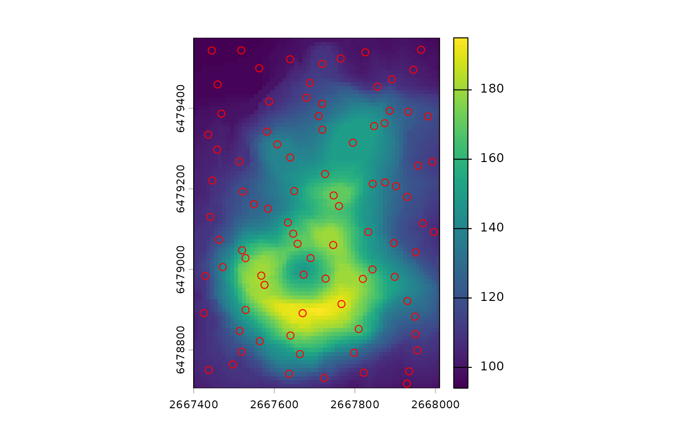
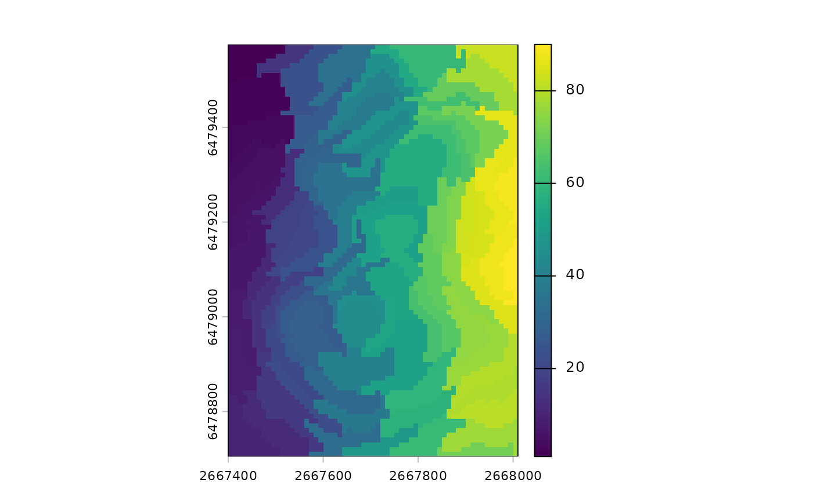
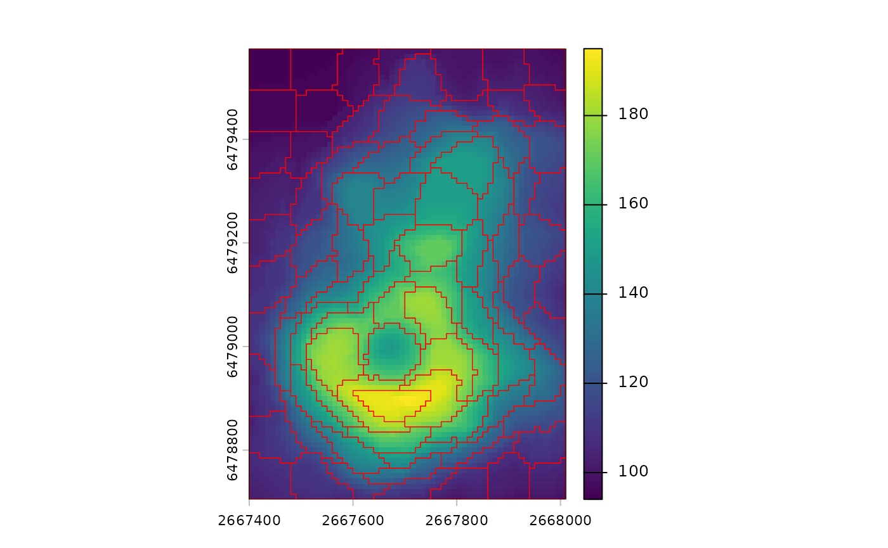
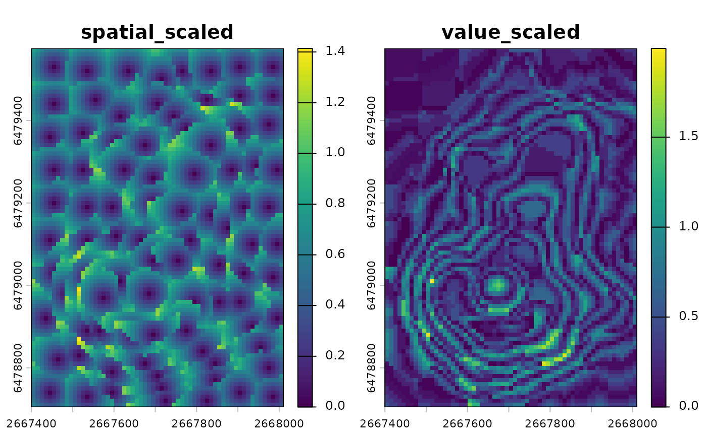
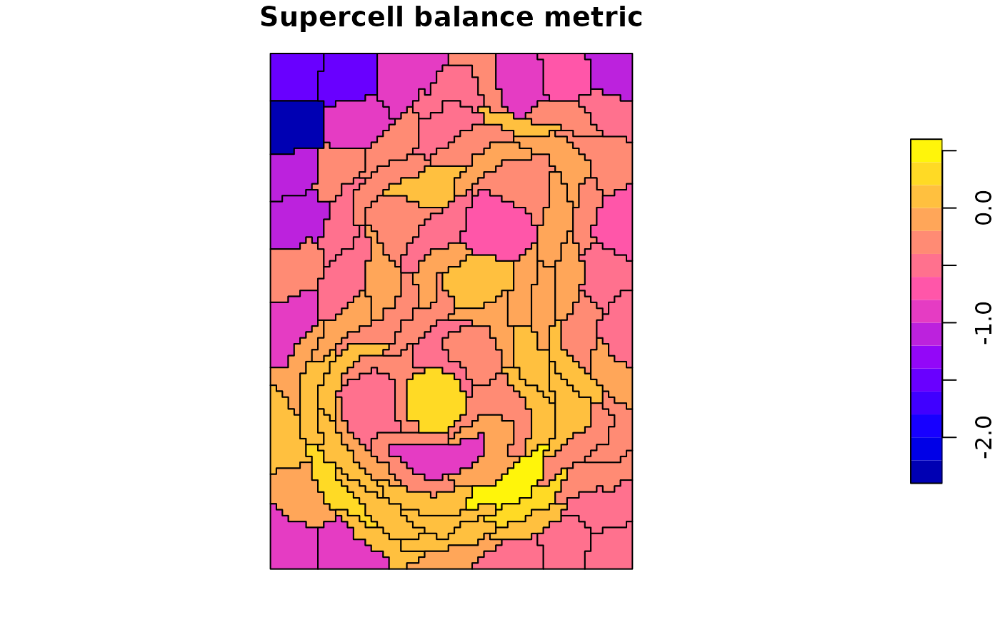
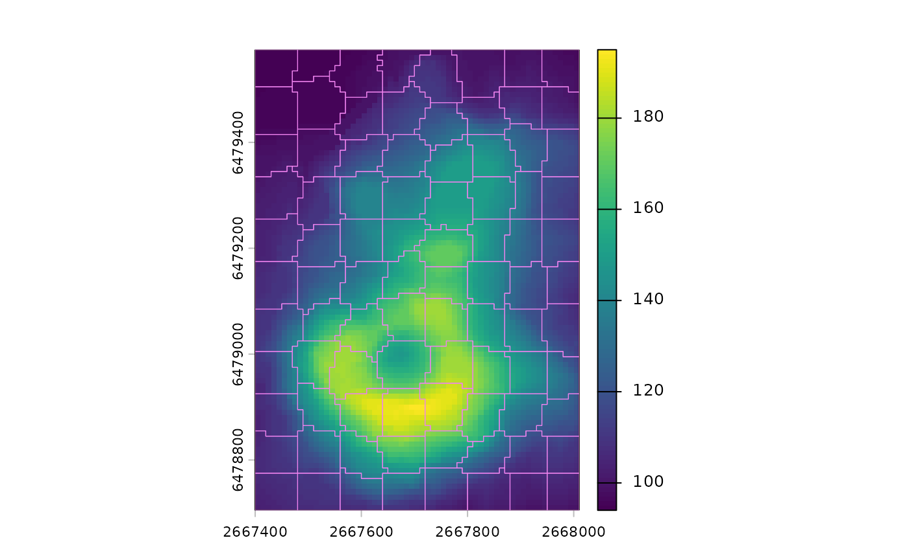

Main changes since version 1.0.0
Jakub Nowosad
2026-02-07
Source:vignettes/articles/v2-changes-since-v1.Rmd
v2-changes-since-v1.RmdThis vignette summarizes the main changes in supercells since version 1.0.0. It highlights user-facing updates and points to notable new functionality.
library(supercells)
library(terra)
vol <- terra::rast(system.file("raster/volcano.tif", package = "supercells"))SLIC syntax and outputs
The new version of the supercells package introduces
a consistent syntax across functions, with a set of functions with the
sc_ prefix. The main function in the package is
sc_slic(), which segments raster data into supercells. It
replaces the previous supercells() function (which is still
available for backward compatibility). This function also has two
closely related functions for alternative output formats:
sc_slic_points() and sc_slic_raster().
sc_slic() returns polygon
supercells,sc_slic_points() returns their centers as
points, and sc_slic_raster() returns a raster of supercell
IDs.
# Polygon supercells (sf)
vol_sc <- sc_slic(
vol,
step = 8,
compactness = 1,
outcomes = c("supercells", "coordinates", "values")
)
# Plot polygons on top of the volcano raster
terra::plot(vol)
plot(sf::st_geometry(vol_sc), add = TRUE, lwd = 0.6, border = "red")
# Supercell centers as points (sf)
vol_pts <- sc_slic_points(
vol,
step = 8,
compactness = 1
)
# Plot points on top of the volcano raster
terra::plot(vol)
plot(sf::st_geometry(vol_pts), add = TRUE, col = "red")
# Supercell IDs as a raster (SpatRaster)
vol_ids <- sc_slic_raster(
vol,
step = 8,
compactness = 1
)
# Plot raster IDs
terra::plot(vol_ids)
While, sc_slic() is the main function, the other two
functions are useful for specific tasks. For example,
sc_slic_points() is helpful for visualizing initial
supercell centers or iteration diagnostics, while
sc_slic_raster() is useful for large datasets where polygon
outputs may be too memory-intensive.
Compactness tuning and iteration diagnostics
Use sc_tune_compactness() to estimate a compactness
value from a short pilot run, then run sc_slic() with the
tuned value.
# Estimate compactness from a short pilot run
comp_tune <- sc_tune_compactness(vol, step = 8)
comp_tune
#> step metric compactness
#> 1 8 global 6.864497
# Use the tuned value and plot results
vol_sc_tuned <- sc_slic(vol, step = 8, compactness = comp_tune$compactness)
terra::plot(vol)
plot(sf::st_geometry(vol_sc_tuned), add = TRUE, lwd = 0.6, border = "red")
This function also allow to calculate the compactness using second
method called "local".
sc_slic_points(..., iter_diagnostics = TRUE) attaches
iteration diagnostics so you can visualize convergence in mean distance
across iterations later on with
sc_plot_iter_diagnostics().
# Iteration diagnostics plot (only available without chunking)
vol_pts_diag <- sc_slic_points(
vol,
step = 8,
compactness = 1,
iter_diagnostics = TRUE
)
sc_plot_iter_diagnostics(vol_pts_diag)Metrics for evaluating results
Three new functions, sc_metrics_pixels(),
sc_metrics_supercells(), and
sc_metrics_global(), provide metrics to evaluate supercell
segmentation quality at different levels of detail. Pixel-level metrics
show distances from each cell to its assigned center (lower is more
compact/homogeneous). Supercell-level metrics summarize those distances
by supercell, and global metrics provide a single-row overview for
comparisons.
vol_sc <- sc_slic(
vol,
step = 8,
compactness = 7,
outcomes = c("supercells", "coordinates", "values")
)
# Per-pixel metrics (SpatRaster)
pixel_metrics <- sc_metrics_pixels(vol, vol_sc, metrics = c("spatial", "value"))
# Plot a pixel-level metric
terra::plot(pixel_metrics)
# Per-supercell metrics (sf)
supercell_metrics <- sc_metrics_supercells(vol, vol_sc)
head(supercell_metrics)
#> Simple feature collection with 6 features and 5 fields
#> Geometry type: POLYGON
#> Dimension: XY
#> Bounding box: xmin: 2667400 ymin: 6479045 xmax: 2667500 ymax: 6479575
#> Projected CRS: NZGD49 / New Zealand Map Grid
#> supercells mean_spatial_dist_scaled mean_value_dist_scaled mean_combined_dist
#> 1 1 0.4195350 0.08554244 0.4325501
#> 2 2 0.4539066 0.04427186 0.4587638
#> 3 3 0.4003193 0.14495014 0.4452615
#> 4 4 0.4570244 0.14389321 0.4939813
#> 5 5 0.4450208 0.31268263 0.5773152
#> 6 6 0.4680141 0.20287698 0.5398852
#> balance geometry
#> 1 -1.5901344 POLYGON ((2667400 6479575, ...
#> 2 -2.3275422 POLYGON ((2667400 6479495, ...
#> 3 -1.0158726 POLYGON ((2667440 6479415, ...
#> 4 -1.1556654 POLYGON ((2667460 6479345, ...
#> 5 -0.3529323 POLYGON ((2667460 6479265, ...
#> 6 -0.8358987 POLYGON ((2667450 6479175, ...
plot(supercell_metrics["balance"], main = "Supercell balance metric")
# Global metrics (single-row summary)
global_metrics <- sc_metrics_global(vol, vol_sc)
global_metrics
#> step compactness n_supercells mean_spatial_dist_scaled mean_value_dist_scaled
#> 1 8 7 88 0.4718607 0.3701397
#> mean_combined_dist balance
#> 1 0.6517259 -0.3367309SLIC0 adaptive compactness
compactness = "auto" enables adaptive compactness
(SLIC0). This lets the method adjust compactness across supercells
rather than using a single fixed value.
vol_sc_slic0 <- sc_slic(vol, step = 8, compactness = "auto")
# Plot results on top of the volcano raster
terra::plot(vol)
plot(sf::st_geometry(vol_sc_slic0), add = TRUE, lwd = 0.6, border = "violet")
Other changes
- New utilities: Added
step_unittosc_slic()/sc_slic_points()/sc_slic_raster()to support map-unit step sizes. - Behavior: Since version 1.0, the way coordinates are summarized internally has changed, and results in versions after 1.0 may differ slightly from those prior to 1.0.
- Performance: Improved speed and memory efficiency.
- New utilities: Added experimental
sc_merge_supercells()for adjacency-constrained greedy merging. - Chunking and memory: Chunk sizes align to
step, deterministic ID offsets are used for file-backed merges, andoptions(supercells.chunk_mem_gb)controls memory. - Parallelization: Removed future-based parallel chunking.